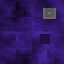

Excel 97 Egg

Rez-Mason Retrographic Services
Vallejo, California
Visit us on the World Wide Web!
https://www.rezmason.net/
What is all this?
Artists and craftspeople often leave their mark on what they make. Programmers are no different.
The basic flight simulator you see here is an example of an "easter egg" — a game, image, sound, or written message hidden in a creative work, which in this case is Microsoft Excel 97.
Users who performed a secret sequence of unlikely actions in an empty spreadsheet were whisked away to this lavender lunar landscape, created by members of Excel's "Charting Team", beside a scrolling stele glorifying the program and crediting everyone who worked on it. It hid in every copy of Excel 97 ever sold, whether you knew it or not.
Before the advent of the Web, the security implications of concealing undocumented functionality in software didn't overly concern the tech industry. Nowadays easter eggs are rarer and less sophisticated, to uphold an unspoken agreement that's emerged between author and user, that a program you trust with access to your information won't contain any surprises that may compromise your computer's performance, stability or security.
What's it doing here?

This HTML port is intended to be a faithful reproduction of the original easter egg, as a way to preserve an important piece of computer history. Most computers that still support Excel 97 run the easter egg too fast to properly function. Virtual machines are up to the task, but require a lot of work to prepare and configure. Converting it to a web-based experience eliminates all barriers to entry, so more people can marvel at what a small team of imaginative engineers managed to once conceal in the world's foremost spreadsheet application.
This project is also fully open source and MIT licensed .
To reverse engineer the original program, its memory was recorded with ProcDump as it ran on Windows XP in Virtual Box , and the hex dumps were compared and inspected with Hex Fiend. This was how the credit text, terrain geometry, and textures were recovered. A custom Win32 program was written to collect the color palette, though it went mostly unused. There was an attempt at decompiling the program, but that proved to be unnecessary.
A simple port of the easter egg was thrown together in Three.js, before this more detailed port was made in regl.
Two striking features of the terrain are its jaggedness and lighting. Modern approaches to realtime per-pixel lighting were unavailable in the mid 90s, and even dynamic vertex lighting was resource intensive. So to lend the terrain some definition, the authors of the easter egg chose to bake in the brightness of the ground's vertices, or points, based on how "pointy" they were, ie. how far they extended from the surface— similar to the browning on a piece of toast. This likely prompted them to cover the landscape in sharp hills and spikes, which also visually alludes to the 3D charts their team were added to Excel 97's repertoire.
Why does it feel... clunky?
For authenticity, this port's frame rate and drawing resolution are throttled by default to match the limitations of conventional office equipment from 1997, but this can be toggled in the toolbar, along with some additional graphics modes:
| ( B ) | Bird's Eye View | A third person perspective to help navigate and understand the terrain. | |
| ( C ) | Lighting Cutoff | Changes the maximum distance of the fog and drawn terrain. | |
| ( Q ) | Show Quad Edges | Highlights the boundaries of the tiled terrain geometry. | |
| ( T ) | Hi Res Textures | Loads replacement textures with 8x the original resolution. | |
| ( R ) | Limit Draw Resolution | Constrains the dimensions of the rendered scene to 800 x 600. | |
| ( S ) | Limit Draw Speed | Constrains the frame rate to approximately 15 FPS. | |
| ( G ) | Show Sindogs |
In place of a sunset, gives the horizon texture a sinusoidal
glow. ( Named after a notorious Excel-related bug in Windows ) |
|
| ( F ) | Fullscreen | Expands to fill the entire screen, just as the original did. |
Flight instruction
On pointer-equipped devices: move your pointer to control your heading, left-click and right-click to accelerate and decelerate, and hold the spacebar to brake.
On touch-enabled devices: use one finger to control your heading, and hold another at the top, bottom, or middle of the screen to accelerate, decelerate or brake.
Torus Trap
After a few minutes of flying around, most users come to realize that the world is like the surface of a torus— in other words, it repeats in every direction— a fact concealed by the short drawing distance. But it may still surprise some to hear this whole world is "charted" from a square "spreadsheet" only 64 cells wide. So how is it so easy to get lost?
Several design decisions work in tandem to make this small world feel like an endless expanse. The original provides no navigational aids, and has few landmarks to help you get your bearings. In fact, many features of the terrain loop around its edge and join back with themselves, thereby appearing endless.
Most importantly, the camera is tightly zoomed in, with a field of view of only around 26 degrees. That is like seeing the world through a porthole the size of a dinner plate two feet away from your face. All combined, these choices helped make the easter egg low-profile, responsive and intriguing.
Acknowledgements
WIP. For now I'll quickly thank Hank Chien , Mike Pavone , Peter Ammon , Jordan Scales and Mike Blackney for the help they provided on this project.